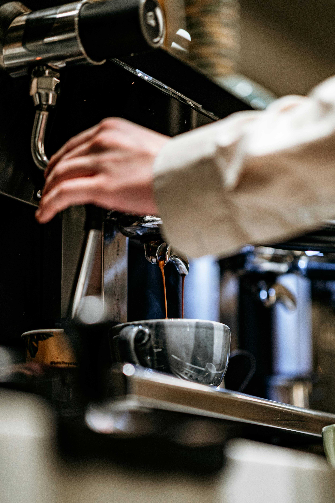

Saint
Specialty coffee in the heart of Baia Mare’s historic center
Old Town, Baia Mare
Where history meets coffee culture
Hidden in the charming old town of Baia Mare, where cobblestone streets and historic architecture create the perfect setting for your daily ritual.
Open Daily
Monday–Wednesday: 8:00 - 23:00
Thursday–Saturday: 8:00 - 24:00 +1
Sunday: 9:00 - 23:00
Crafted with care
Every cup we serve is the result of a meticulous journey — a symphony of flavors crafted with precision and passion.
It all begins in distant highlands, where we select only the finest specialty beans, grown with respect for nature and the people who harvest them.
In our roastery, these beans are roasted in small batches to highlight their full aromatic potential and unique origin notes.
Behind the bar, our baristas calibrate daily — adjusting grind size, dose, and water temperature — ensuring perfect extraction.
Milk texturing transforms each drink into a smooth experience, finished with delicate latte art.
For us, "Crafted with care" is not just a slogan — it's our promise.

About Us
The Saint journey begins in June 2025. From the creators of Narcoffee and Le Bistrot Express, we bring you the finest coffee experience in Baia Mare.
Our passion for quality coffee and exceptional service is at the heart of everything we do.